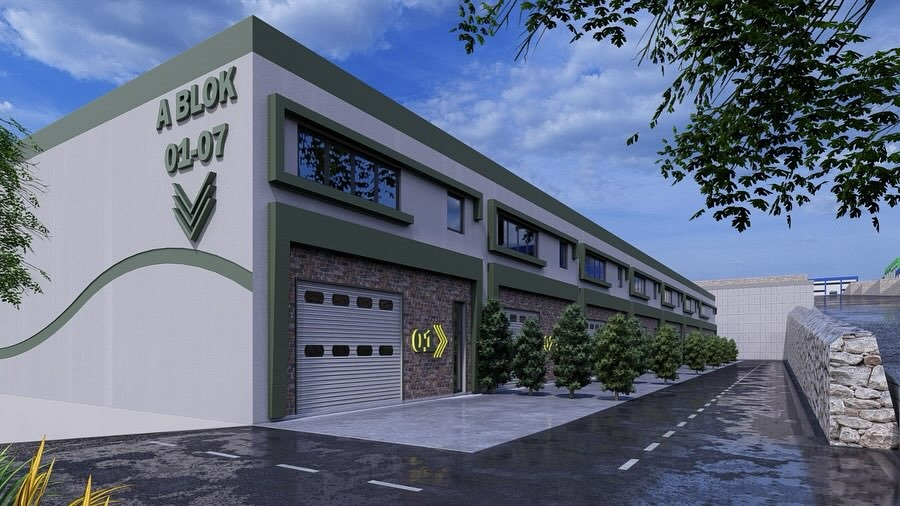
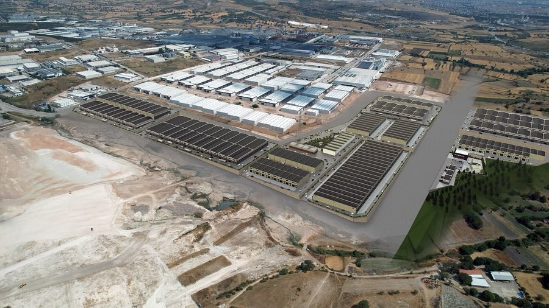
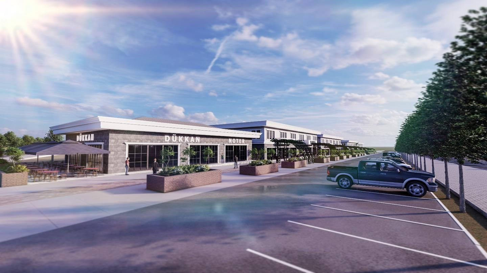
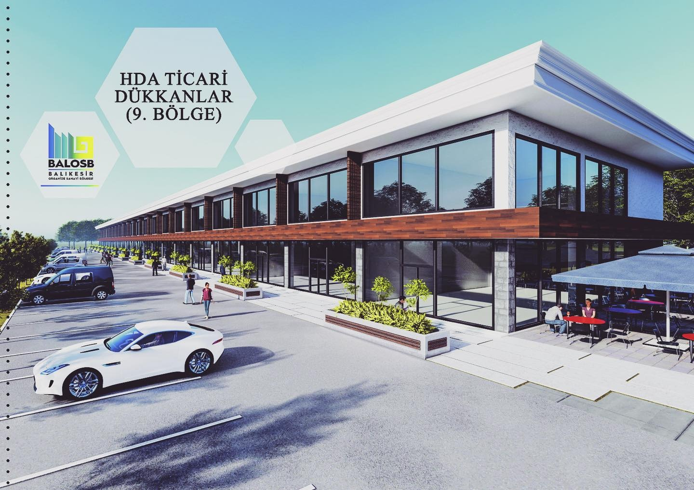
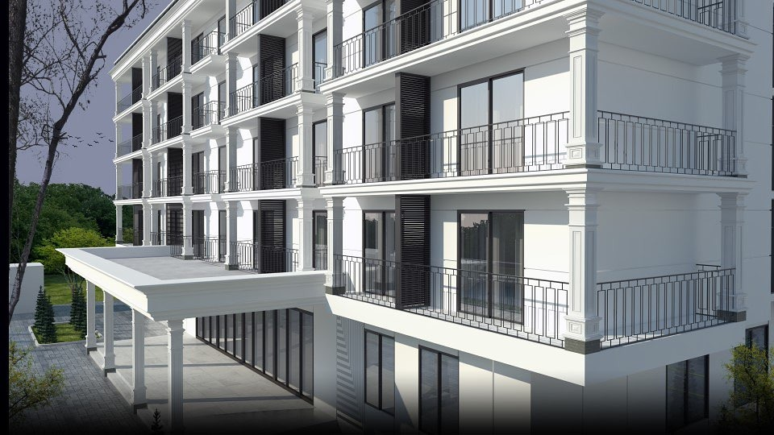
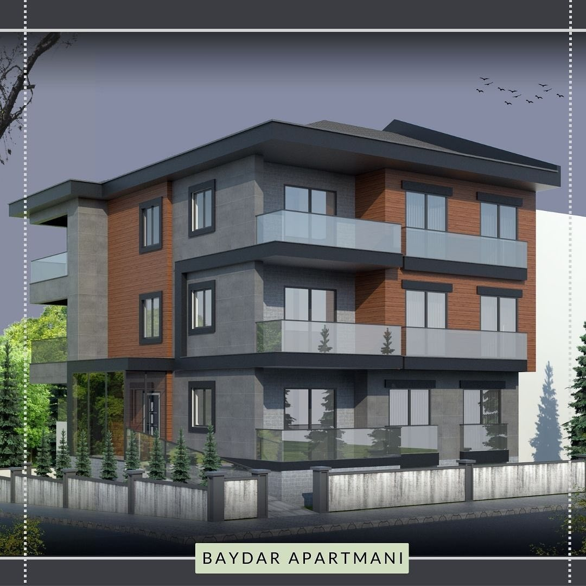
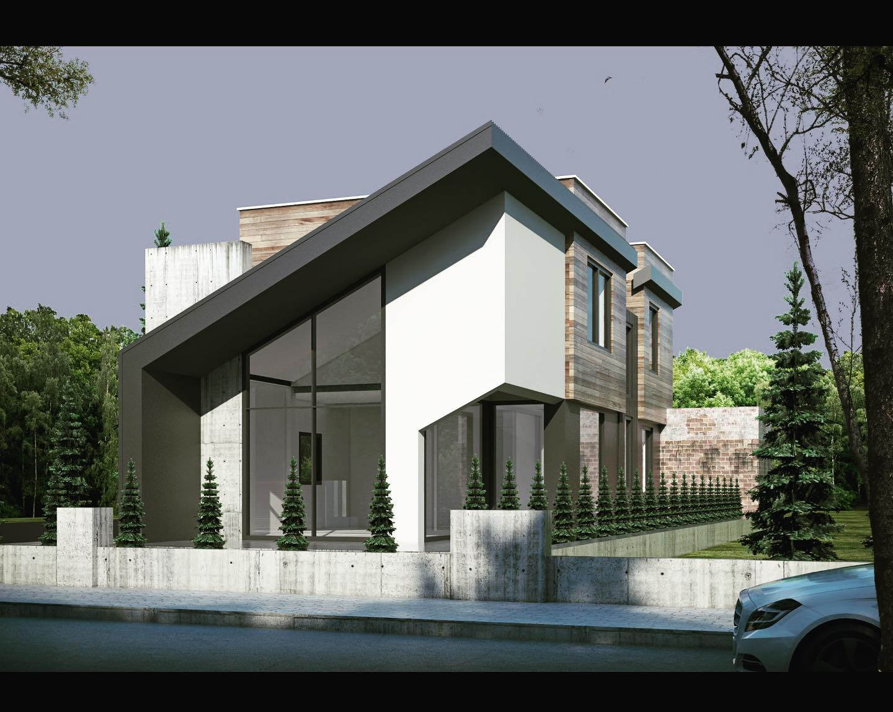
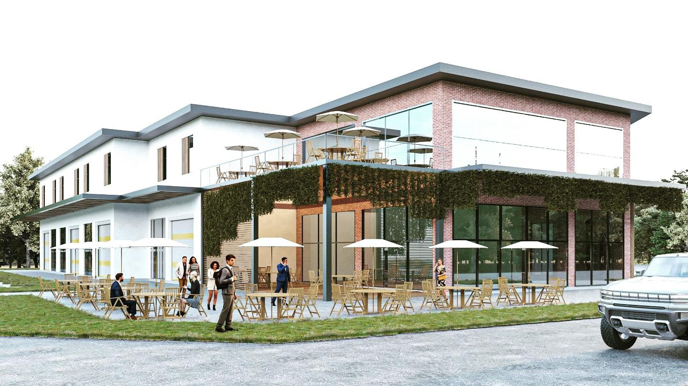

Ağır sanayi fabrika binaları, lojistik depolar ve EPDK lisansına tabi akaryakıt tesislerinde mimari ruhsatlandırmadan anahtar teslim şantiye yönetimine kadar eksiksiz mühendislik.
Balıkesir Organize Sanayi Bölgesi (BALOSB) ve Muradiye OSB başta olmak üzere Marmara ve Ege bölgesindeki sanayi havzalarında; ağır tonajlı vinç yollarına, yüksek tavan serbest açıklıklarına ve endüstriyel zemin kaplamalarına sahip fabrika binaları inşa ediyoruz.








Akaryakıt ve LPG otogaz dağıtım tesisleri, mimarlık ve inşaat mühendisliğinin en hassas mevzuat alanlarından biridir. EPDK Petrol Piyasası Lisans Yönetmeliği ve TSE 12820 standartlarına uygun olarak dispenser adaları, çift cidarlı tank sahaları, nefeslik emniyet hatları ve uzay kafes kanopi imalatlarını anahtar teslim gerçekleştiriyoruz.
Komşu parsel, yol, bina ve enerji nakil hatlarına zorunlu güvenlik çekme payları.
Zone 0, 1 ve 2 patlama riskli sahalarda kıvılcım çıkarmaz elektrik ve mekanik altyapı.
EN 12285-1 standartlarında vakum kaçak algılayıcılı yeraltı akaryakıt depoları.
Yüksek rüzgar ve kar yüklerine dayanıklı geniş açıklıklı çelik kanopi montajı.
| Yapı / Tesis Türü | İlgili Mevzuat & Kurum | Uygulanan Standartlar | Yurdanur Köse Güvencesi |
|---|---|---|---|
| OSB Fabrika & Lojistik Antrepo | 4562 Sayılı OSB Kanunu, İmar Kanunu | TBDY 2018 Deprem Yönetmeliği, Çelik Konstrüksiyon TS 648 | %100 İmar & İskan Garantisi |
| Akaryakıt & Otogaz İstasyonu | 5015 Sayılı Petrol Piyasası Kanunu / EPDK | TSE 12820, EN 12285-1 Tank, ATEX Zone Standartları | EPDK Lisans Uygunluk Onayı |
| Lojistik Tır Parkı & Ağır Zemin | Karayolları Genel Md., BALOSB Şartnamesi | C35/45 Donatılı Saha Betonu, Drenaj & Menfez | 60 Ton Aks Yükü Mukavemeti |
| Derin Kazı & İstinat Yapıları | Afet ve Acil Durum Yönetimi (AFAD), ÇŞB | Eurocode 7 Geoteknik, Ankrajlı & Fore Kazıklı Perdeler | Jeoteknik Mühendislik Onayı |
Arsanızın imar durumu, kot farkı, trafo mesafesi ve OSB yönetmeliğine uygun fabrika hacmi hesaplamaları için bizimle iletişime geçebilirsiniz.
İnşa edilen tüm akaryakıt tesisleri EPDK Petrol Piyasası Lisans Yönetmeliği ve TSE 12820 kriterlerine %100 uyumludur.
Yeraltı tankları, dispenser adaları ve nefeslik borularında zorunlu asgari emniyet mesafeleri milimetrik olarak uygulanır.
Zone 0, Zone 1 ve Zone 2 tehlikeli bölgelerde yalnızca ATEX sertifikalı elektrik ekipmanları kullanılır.
Şantiyelerimizde sıfır kaza toleransı ve A sınıfı İSG uzmanı denetimi esastır.
Yurdanur Köse Mimarlık İnşaat ve Tic. Ltd. Şti. olarak müşterilerimizin gizlilik haklarına azami özen gösteriyoruz.
Keşif formları üzerinden toplanan veriler yalnızca teknik analiz ve teklif hazırlığı için kullanılır, üçüncü şahıslara aktarılmaz.
6698 sayılı Kanun uyarınca veri sorumlusu Yurdanur Köse Mimarlık İnşaat ve Ticaret Limited Şirketi'dir.
İletişim bilgileriniz mimari sözleşmelerin kurulması ve ifası hukuki sebebine dayalı olarak güvenle işlenir.